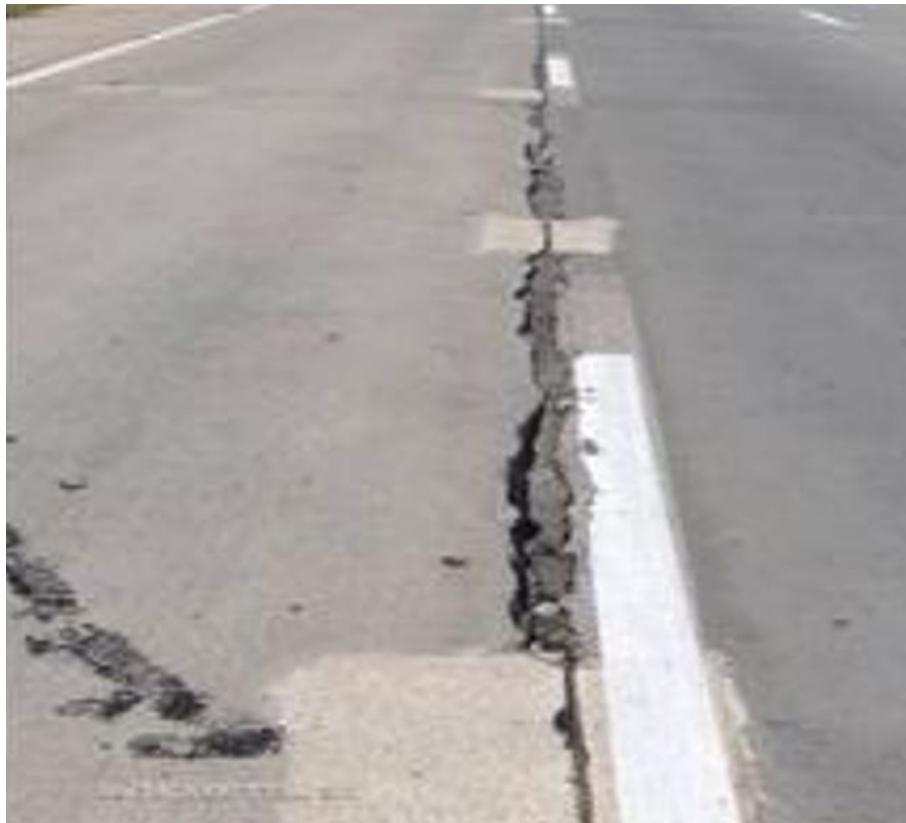
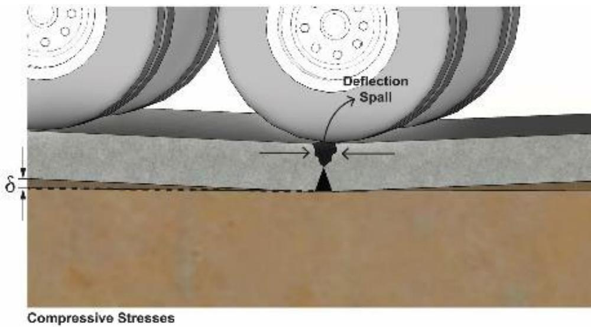
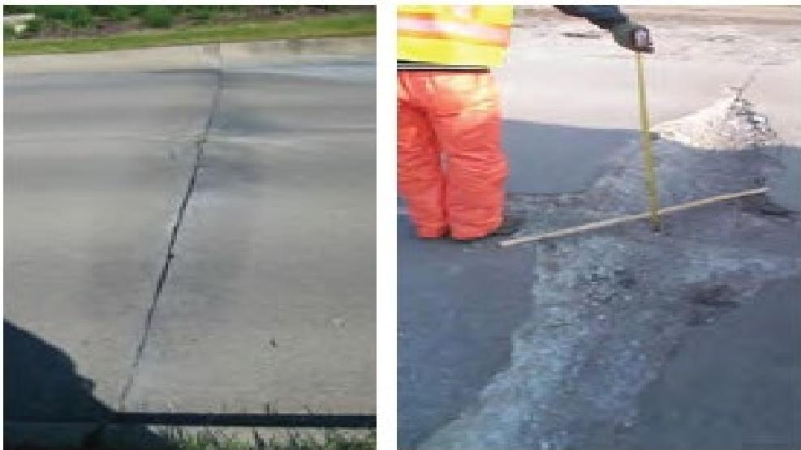
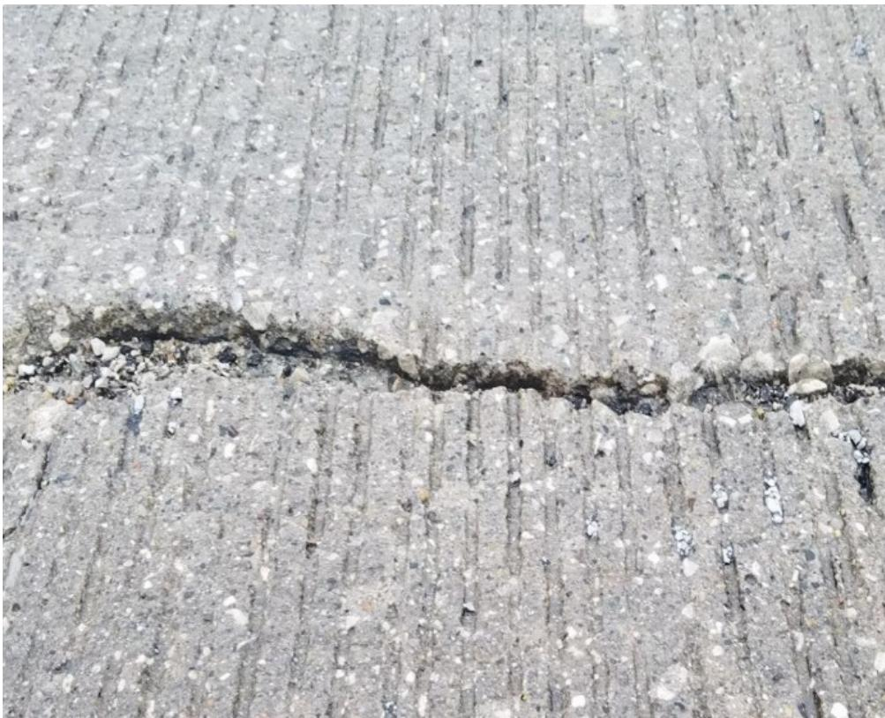

Concrete Pavement Joint Spalling
Concrete pavement joint spalling is a localized loss of concrete at slab joints that appears as surface deterioration, cracking, chipping or fraying of the joint edges and compromises load‑transfer across the pavement [1][2][4][5]. The distress typically initiates within the top few inches near the base of saw cuts, expands laterally and vertically—often parallel to the joints within about 4–6 in. of the original joint wall—and may progress through the full slab thickness, producing loose debris, shallow vertical drops and increased roughness that degrade ride quality and safety [5]. It is driven by interrelated mechanisms such as fluid saturation with freeze‑thaw action, infiltration of incompressible material into unsealed joints, early joint widening from shrinkage, differential thermal movement, inadequate doweling and insufficient base stiffness, all of which generate excessive stresses that cause the concrete to spall [1][5].
Sources (5)
Purpose and treatment objectives
The guides describe the condition addressed by Concrete Pavement Joint Spalling as a localized loss of concrete at slab joints that appears as surface deterioration and compromises load‑transfer. The distress is characterized by “The damage associated with fluid saturation and classic freeze‑thaw generally manifests as cracks that are oriented parallel to the joints” within approximately 4–6 in. of the original joint wall. It also occurs in an “area enclosed by two closely spaced transverse cracks, a short longitudinal crack, and the edge of the pavement or longitudinal joint exhibiting spalling, shattering, or faulting.” Across sources this distress is summarized as “Joint and crack spalling is deterioration … cracking, chipping, or fraying of the concrete slab joint or crack edges,” which leads to loose debris, shallow vertical drops, and surface roughness. [1][2][4][5]
[1] — Ch. 2 (p. 13); [2] — Ch. 10 (pp. 327–330); [4] — Types of Partial-Depth Repairs (p. 12); [5] — Ch. 4 (pp. 192–213), Ch. 18 (p. 396)
Distress characterization and causes
Joint spalling typically initiates at the pavement surface within the top few inches, though it can develop deeper and eventually extend through the full slab thickness. It occurs most often along transverse and longitudinal joints, especially in unbonded overlays where longitudinal joint widths widen. The distress expands laterally and vertically, widening the joint and creating panel skew or lane separation. Severity ranges from modest joint widening to severe blow‑ups that appear as pronounced spalling. Progression may be continuous, with “continuous deterioration” expanding width and depth, but the rate can vary—rapid when differential expansion is high or more gradual under slower movement. Safety and operational impacts include loose debris, shallow vertical drops, surface roughness that degrades ride quality, and lane separation/panel misalignment that compromise traffic safety and performance. [5]
The figure below illustrates common examples of joint and crack spalling associated with this distress.

Severe longitudinal joint spalling on a concrete pavement. [5]The image displays a close-up view of a concrete pavement surface featuring a prominent longitudinal joint marked by a white painted line. There is significant deterioration along the edges of this joint, characterized by extensive cracking, chipping, and fraying that has created loose debris on the adjacent slab surface. This visual evidence demonstrates how spalling expands laterally and vertically from the joint opening, resulting in shallow vertical drops that degrade ride quality.
[5] — Ch. 4 (p. 192), Ch. 18 (pp. 424–426)
The guides identify several interrelated mechanisms that initiate and accelerate joint spalling. Fluid saturation combined with freeze‑thaw action penetrates the base of saw cuts, where cracks develop in response to spalling that begins at the base of the saw cuts. Construction‑related weaknesses create a plane of weakness: “The saw cut is not through the entire thickness of the slab but rather through a portion of it, thereby creating a plane of weakness that encourages the crack to occur at that location.” Insufficient or early sawing produces jagged edges that trap water and deicing chemicals, further promoting material loss. Joint layout that yields non‑square panels, acute joint angles, or mismatched joints generates local stress concentrations, leading to uncontrolled slab cracking. Infiltration of incompressible materials such as mortar, small aggregates, or paste into the joint prevents normal closure and produces localized pressure: “Incompressible materials such as small aggregates can enter into unsealed joints causing excessive stresses along the joint face of the concrete when the joint contracts.” Shrinkage of panels during the first five years, continued aging‑related shrinkage, and temperature‑moisture cycles cause horizontal movements that add compressive stress at the joint face. Repeated vertical traffic loads, especially on undowelled joints or where the supporting base/subbase lacks stiffness, induce flexure and edge crushing; “Undowelled transverse joints are deflected by heavy vertical loads” and “The severity of the problem is also dependent upon the ability of the base or subbase to resist deformation due to the vertical loading.” Misalignment of overlay saw cuts with existing joints creates reflective cracks that isolate concrete between cuts, which deteriorates under traffic and is ejected as spall. Differential thermal movements of the concrete mix, amplified by trapped incompressible material and reduced friction on aged HMA subbases, increase internal pressures that manifest as blow‑up spalls. [1][5]
The figure below illustrates deflection spalling resulting from inadequate base support under heavy vertical loads.

Diagram of deflection spalling caused by heavy tire loading on a joint with insufficient base support. [5]The figure depicts the cross-section of concrete pavement slabs under the vertical load of aircraft tires, showing how the slab deflects downward at the joint interface. The image illustrates how this localized loss of concrete at the slab joint compromises load-transfer across the pavement.
[1] — Ch. 2 (p. 13); [5] — Ch. 4 (pp. 117–213), Ch. 18 (pp. 396–426)
Condition assessment and timing
A field visual survey looking for a series of unusually narrow saw‑cut joints followed by a wider joint can flag undeployed or poorly restrained joints that are prone to blowups that resemble severe spalling, and those suspect locations should be verified by coring the joint or exposing the pavement edge to confirm whether the joint is actually working. This combination of visual pattern inspection and direct core/edge examination provides the necessary evidence to decide if and where joint‑spalling remediation is required. [5]
[5] — Ch. 18 (pp. 424–426)
Concrete pavement joint spalling should be addressed once the accumulated micro‑cracking caused by ongoing slab shrinkage and repeated traffic loading has progressed to visible spalling at the joint face. This condition typically follows the early widening of unsealed joints—most rapidly during the first five years—when trapped aggregates generate excess compressive stress that fractures the top of the slab. [5]
The figure below illustrates this progression, showing the evolution of joint deterioration from initial shadowing to high severity.

Evolution of joint deterioration from shadowing (left) to high severity (right) [5]The figure displays a progression of concrete pavement distress, showing an initial stage characterized by minor surface cracking and edge chipping at the left.
[5] — Ch. 4 (pp. 209–210)
Materials and repair details
Partial‑depth repair of concrete pavement joint spalling is organized into three configuration types defined by the extent of the defect. Spot repairs that are between fifteen inches and six feet long constitute Type 1, while any deterioration longer than six feet along a longitudinal or transverse joint or crack is treated as a Type 2 extended repair. When the damage occurs at a joint intersection or slab edge, a short‑distance full‑depth spot repair is classified as Type 3. The guide does not prescribe specific materials or products for these repairs, focusing instead on the dimensional criteria that dictate the appropriate repair approach. [4]
The figure below illustrates examples of Type 1 spot repair candidates.
 Types of partial-depth joint/crack/spall repairs and corresponding field examples. [4]
Types of partial-depth joint/crack/spall repairs and corresponding field examples. [4]
The figure illustrates the classification system for repairing concrete pavement distress, specifically showing how Type 1 spot repairs are applied to localized areas such as spalls or cracks using a saw-and-chip method. It visually demonstrates that these repairs involve removing material to expose sound concrete and creating tapered edges, which is the standard procedure for addressing surface deterioration at joints. By depicting both the schematic preparation of repair zones and photographs of actual spalled concrete, the figure provides a direct visual reference for the physical manifestation of joint spalling.
[4] — Types of Partial-Depth Repairs (p. 12)
Joint spalling is most sensitive to the condition of the transverse joint at the time a new lane or shoulder is placed; if mortar or any incompressible fill has seeped into an already opened joint, even a small volume can restrain slab expansion and produce a spall, while larger volumes promote corner cracking. The performance of concrete pavement joints is highly sensitive to material and existing‑pavement conditions; incompressible small aggregates that infiltrate unsealed joints generate excessive stresses when the joint contracts, while ongoing shrinkage causes the joints to widen—especially during the first five years—and creates horizontal movement from temperature and moisture cycles combined with repeated traffic loading. Joint spalling is aggravated when transverse joints lack dowels and are subjected to heavy vertical loads, especially if the joint is tight or packed with incompressible filler, because the slabs then bear on each other.
To mitigate these mechanisms, joints must be properly sealed to prevent infiltration of mortar or aggregates, compatible compressible joint filler should be used, and dowels must be correctly placed and aligned. Construction sequencing should avoid long intervals between stages so that shrinkage‑induced opening does not occur before the adjacent lane is tied in, and transverse joints should be cut within the recommended sawing window to prevent uncontrolled propagation. The underlying base or subbase must have sufficient stiffness to resist deformation under vertical traffic loads; softening subgrade or progressive base compression can amplify slab deflection and lead to spalling. For unbonded concrete overlays, the overlay saw cuts must coincide with existing joints, and overlay thickness should exceed approximately seven inches to reduce buckling risk, while a low coefficient of thermal expansion and avoidance of incompressible filler further limit internal stresses. [5]
[5] — Ch. 4 (pp. 186–213), Ch. 18 (pp. 396–426)
Treatment procedures
The guides agree that the concrete saw is the essential piece of equipment for creating transverse joints; “Sawing too early can cause the saw blade to pull aggregate particles free from the pavement surface along the cut.” A second sealing cut may be employed when raveling is expected. Sequencing requirements stress avoiding both premature and excessively delayed cuts: early entry produces jagged edges that trap moisture and de‑icing chemicals, while “When transverse joints are sawn late in the sawing window, the joint will sometimes propagate randomly ahead of the saw blade as the saw approaches the panel edge.” In addition, “infiltration of mortar or other incompressible materials into the transverse joint at the longitudinal joint during placement of an adjacent lane or shoulder” combined with “several weeks or months pass between construction stages” creates restraints that later manifest as spalling. Environmental conditions that exacerbate joint stress are identified across sources: “fluid saturation and classic freeze‑thaw promote spalling at the base of those cuts,” and “Expansion of the concrete pavement due to heavy rains, excessive heat, or a combination of both.” Under such moisture‑rich or high‑temperature states, friction between traffic and the slab can become problematic; “Frictional forces from traffic can cause the slabs to move when these conditions are present in the underlying HMA,” so limiting vehicle loads until the new overlay achieves adequate bond and aggregate interlock is recommended. [1][5]
[1] — Ch. 2 (p. 13); [5] — Ch. 4 (pp. 186–213), Ch. 18 (pp. 424–426)
Quality and workmanship
Inspectors should verify that joint faces are fully sealed and free of incompressible material; measure joint width especially during the first five years as panels shrink; confirm dowels are present, correctly aligned, and that the joint is not overly tight or filled with low‑quality PCC; evaluate the base, subbase and subgrade for adequate resistance to vertical loads; ensure saw cuts are made at the proper time to avoid pulling aggregate from the surface; examine cut edges for excessive raveling; assess slab thickness (not less than seven inches) and the deployment pattern of saw‑cut joints; and, when necessary, use coring or edge exposure to confirm joint activity. Particular attention should be given to longitudinal joints near slab edges with granular shoulders where aggregate intrusion is common, and to early micro‑cracking or spalling at the top of the slab caused by repeated traffic impacts. [5]
The following figure illustrates the specific requirements for joint saw cut depth and width.
 Illustration of BCOC joint saw cut depth and width requirements Modified from Harrington and Fick 2014 [5]
Illustration of BCOC joint saw cut depth and width requirements Modified from Harrington and Fick 2014 [5]
The figure depicts a cross-section of an existing concrete pavement overlaid with bonded concrete overlay, highlighting the alignment between the new Transverse Overlay Joint and the Saw Cut in Existing Slab. It illustrates that for proper joint performance, the width of the new overlay transverse joint (X) must be greater than the saw cut width (Y), which corresponds to the underlying crack in the existing slab. This configuration prevents the overlay from bridging the underlying joint, thereby avoiding the concentration of compressive forces that would otherwise result in spalling or debonding.
[5] — Ch. 4 (pp. 209–213), Ch. 18 (pp. 424–426)
When evaluating concrete pavement joint spalling, the guidance permits a limited amount of raveling at the saw cut, especially when a second cut is made for a joint sealer; any extensive jagged edge that traps water and de‑icing chemicals would be unsatisfactory because it encourages spalling. Thus, acceptable condition is indicated by only “some” raveling and a cleanly sealed joint after the secondary cut. [5]
The figure below illustrates an example of full-depth repair for such a spalled joint.
 Example of full-depth repair of a spalled joint (plan view) [5]
Example of full-depth repair of a spalled joint (plan view) [5]
The figure illustrates the plan and elevation views of a mid-depth slab replacement used to repair concrete pavement deterioration. It details the placement of smooth dowels within the new patch to facilitate load transfer across the joint interface. This repair method is a candidate for handling higher severity levels of joint and crack spalling when deterioration exceeds half the pavement thickness.
[5] — Ch. 4 (p. 213)
Performance and service life
Concrete‑pavement joint spalling presents in several recurring distress forms—joint or crack spalling, deflection (crush) spalling, reflective‑crack spalling in overlays, and blowup‑type failures. The guides note that these distresses are among the most common concrete‑pavement problems. They share a set of influencing mechanisms: infiltration of incompressible material into unsealed joints, joint widening during early shrinkage, temperature‑ and moisture‑induced horizontal movement, repeated vertical traffic loading, inadequate joint reinforcement (e.g., undowelled transverse joints), and subgrade or base weakness.
Infiltration of small aggregates creates excessive stresses along the joint face when the joint contracts, initiating micro‑cracking that evolves to spalling. Undowelled transverse joints are deflected by heavy vertical loads and may crush if the joint is tight or packed with incompressible material; the severity depends on the base/subbase’s ability to resist deformation. Early or late sawing produces jagged edges that trap water and deicing chemicals, accelerating deterioration. Sawing too early can cause the saw blade to pull aggregate particles free from the pavement surface along the cut, producing a rough edge that leads to spalling.
Joint widening—particularly in the first five years as panels shrink—increases susceptibility to compressive stresses generated by horizontal movement from temperature and moisture fluctuations combined with traffic impacts. The resulting micro‑cracks often appear as cracks oriented parallel to the joints, typically developing within about 4 to 6 in. of the original joint walls, and they originate from spalling that begins at the base of the saw cuts used to construct the joints.
Overlay installations add additional failure modes. Misalignment of overlay saw cuts with existing joints creates a narrow concrete strip; a parallel reflective crack forms in the overlay directly over the underlying joint, and the concrete between the cut and the crack can deteriorate under traffic and be ejected as spalling. Blowup‑type failures in unbonded concrete overlays are linked to incompressible fill or differential thermal expansion, especially in thin sections (< 7 in.) where low friction with the underlying HMA permits slab movement.
Environmental conditions influence depth and severity: spalling may remain confined to the top few inches or progress deeper, producing loose debris, shallow vertical drops, and a rough riding surface. Subgrade softening, progressive base compression, and weak concrete at joints (from inadequate consolidation) further exacerbate deflection spalling. [1][5]
The figure below illustrates how deflection spalling manifests as a result of inadequate subgrade consolidation.

Deflection spalling of crack due to inadequate consolidation of the subgrade [5]The image shows a longitudinal joint in a concrete pavement where the edges have suffered significant localized loss and deterioration.
[1] — Ch. 2 (p. 13); [5] — Ch. 4 (pp. 186–213), Ch. 18 (pp. 396–426)
Monitoring and follow-up
The guides indicate that additional maintenance, repair, or rehabilitation is warranted when any of the following conditions appear in a concrete‑pavement joint spalling area: fluid‑saturation combined with freeze‑thaw cycles initiates spalling at the base of saw cuts, producing cracks oriented parallel to the joint and confined to roughly four to six inches from the original joint wall; slab edges within about 0.6 m (≈ two feet) of a transverse joint begin to crack, break, chip or fray, especially when chipping occurs within the first 12 mm adjacent to a sealant; surface distress such as loose debris, shallow vertical drops, and increased roughness is observed; joint edges widen in width or depth beyond the surface layers, including longitudinal joints that expand due to wedging forces; blow‑up type failures appear in unbonded concrete overlays, often linked to incompressible joint materials or high thermal expansion of the concrete mix; a field pattern of several narrow nonworking saw cuts followed by a wider working joint suggests reduced friction and lengthened slab spans; and thin overlays (less than seven inches) exhibit buckling under compressive loads. The presence of any of these distress indicators signals that the joint area is no longer performing adequately and should be evaluated for corrective action. [1][2][5]
The figure below illustrates freeze-thaw damage, a primary mechanism contributing to these distress indicators.
 A concrete cylinder split vertically by freeze-thaw damage. [5]
A concrete cylinder split vertically by freeze-thaw damage. [5]
The image displays a cylindrical specimen of cementitious material that has fractured completely into two halves along its longitudinal axis, revealing the internal texture and aggregate distribution. This figure illustrates freeze-thaw damage with the flaking of the paste and the loss of the damaged paste that leaves the remaining aggregate.
[1] — Ch. 2 (p. 13); [2] — Ch. 10 (p. 330); [5] — Ch. 4 (p. 192), Ch. 18 (pp. 424–426)